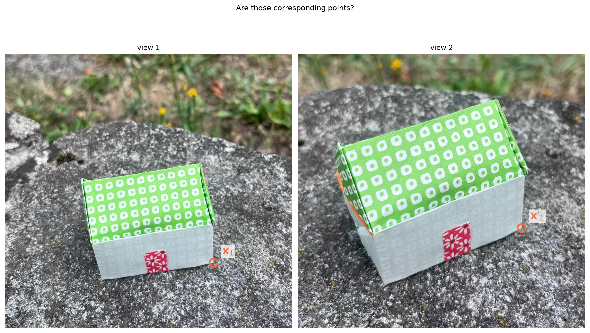
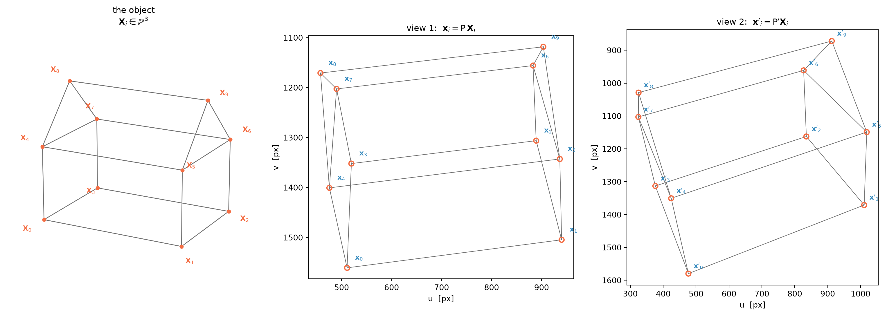
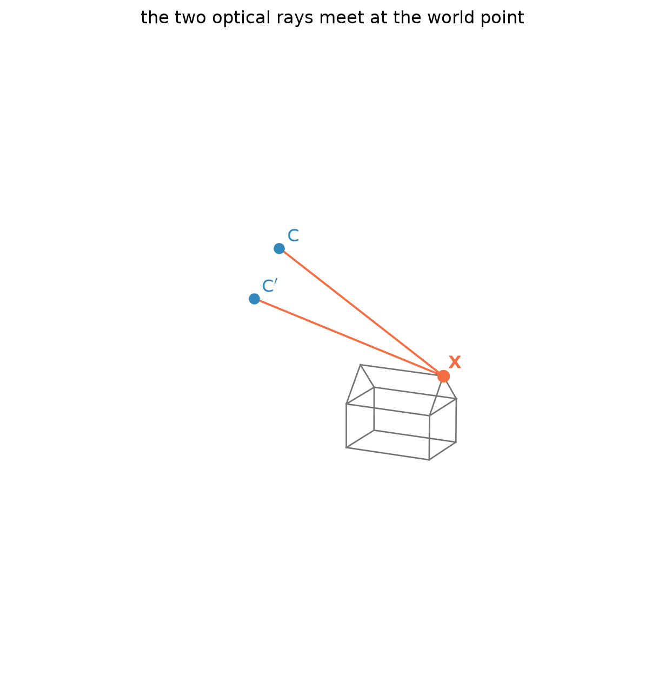
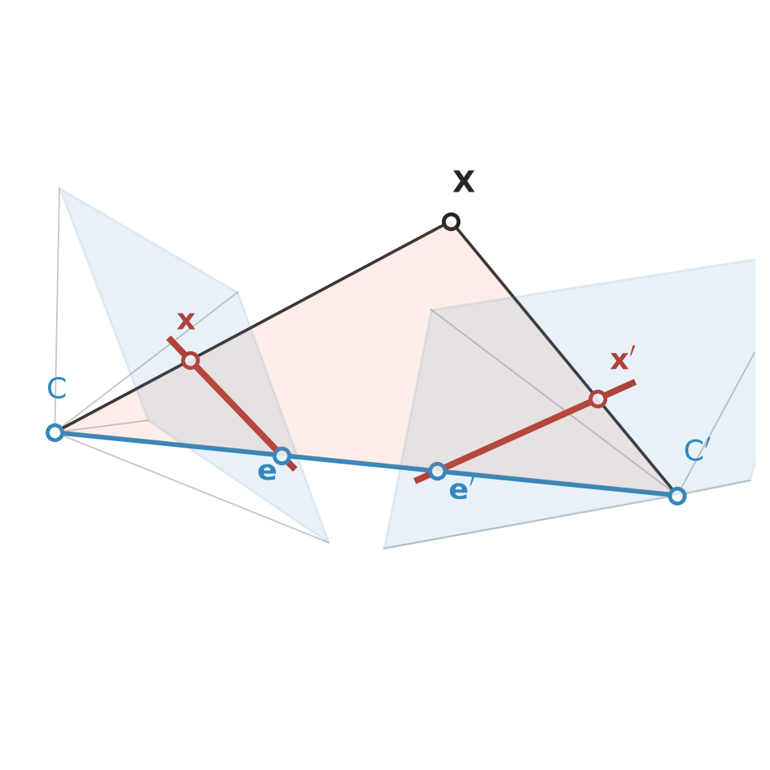
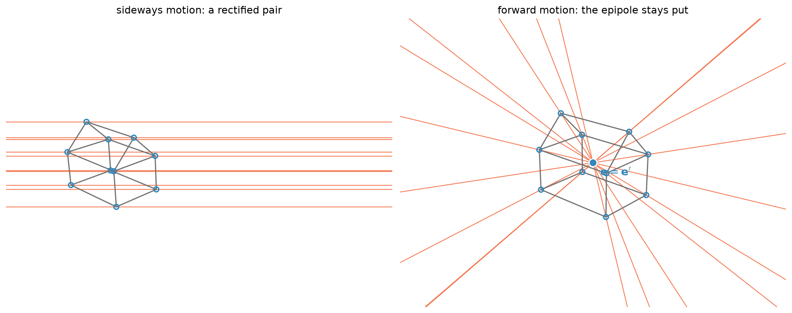
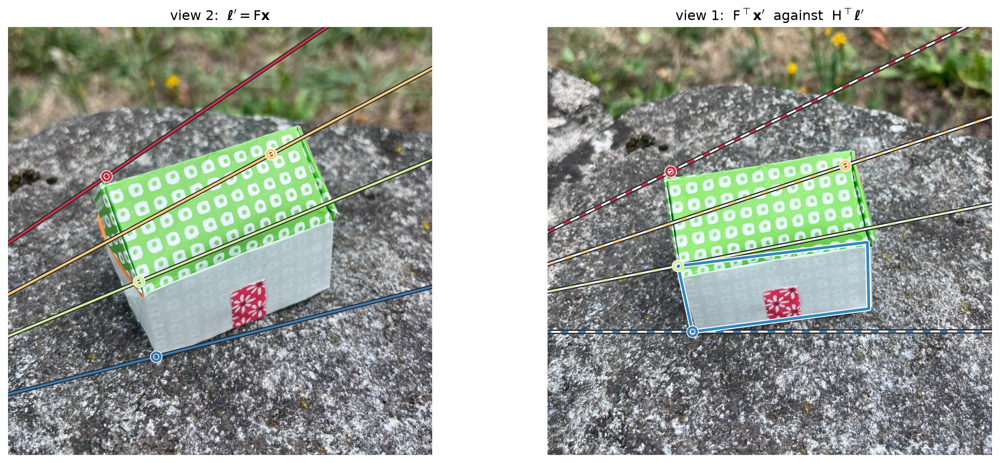
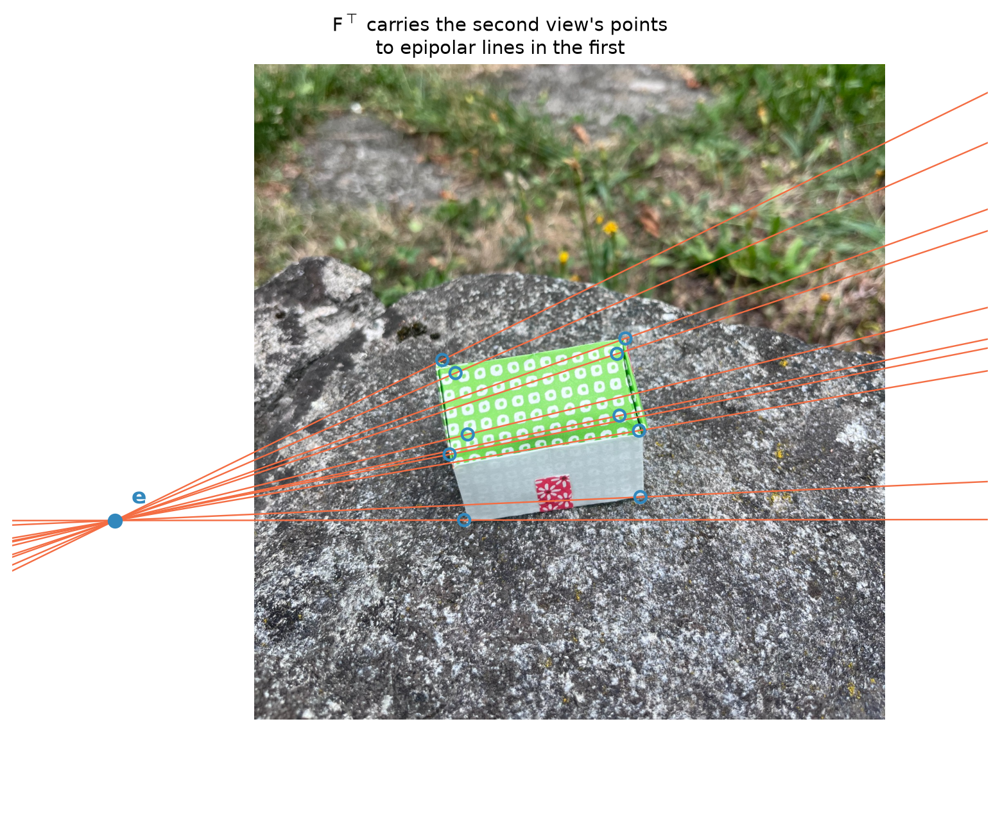

This notebook explores epipolar geometry, the geometric and algebraic constraint that ties two uncalibrated views of the same 3D scene.
We start from a question. Given a point \(\mathbf{x}\) in the first image and a point \(\mathbf{x}'\) in the second, how do we decide whether they are images of the same 3D point \(\mathbf{X}\)?
This can be answered from the image coordinates alone, without relying on image content or the reconstruction of 3D point. Specifically, there is a condition that involves only the two image points and the two cameras that acquired the scene and it reads
We first characterise corresponding points algebraically, and find that their images must satisfy the previous bilinear relation. We then revisit that condition geometrically to introduce one of the main characters of epipolar geometry, the fundamental matrix. Finally we estimate it from correspondences on real images using the eight-point algorithm.
As usual the running examples are built around the Origami House. We will work the geometry out in a noiseless setting before moving to real data.

Figure 1: The same origami house from two views. Are \(\mathbf{x}_1\) and \(\mathbf{x}_1'\) a pair of corresponding points?
When do two points correspond?
Here in (ffig-object-and-views?) are the two views, drawn by projecting the model of the Origami House through the two cameras \(\mathsf{P}\) and \(\mathsf{P}'\). For now we are working with synthetic images: every image point is projected exactly through the cameras.
Ten vertices are marked. The thin wireframe is there so that you can recognise the house and see which corner is which.

Figure 2: The ideal house in space, and its two exact perspective projections.
Now let’s start by the definition of corresponding points.
Definition 1 (Corresponding points) Two image points \(\mathbf{x}\) and \(\mathbf{x}'\) are corresponding points if there exists a world point \(\mathbf{X}\) that projects to both:
The scale factors \(\lambda, \lambda'\) are there because a projective point is only defined up to scale.
We can read the two equations as a single linear system in the unknowns \((\mathbf{X}, \lambda, \lambda')\), six unknowns, since \(\mathbf{X}\) is a homogeneous 4-vector:
\(\mathsf{L}\) is \(6 \times 6\) and the system is homogeneous, so it always has the solution \(\mathbf{0}\), which is not a valid solution at all, because \(\mathbf{X} =
\mathbf{0}\) is not a point of \(\mathbb{P}^3\). A genuine world point exists exactly when the system has a non-trivial solution, that is, \(\mathbf{x}\) and \(\mathbf{x}'\) are corresponding points if
\[\det \mathsf{L} = 0 \tag{1}\]
Let us observe what happens, when, for example, we substitute \(\mathbf{x}_9\) and \(\mathbf{x}'_9\) in Equation 1:
def L_matrix(P, Pp, x, xp):"""The 6x6 system expressing that x and x' are images of a common point.""" L = np.zeros((6, 6)) L[:3, :4] = P; L[:3, 4] =-x L[3:, :4] = Pp; L[3:, 5] =-xpreturn Lk ="X9"# the right end of the ridgex = h(xs[IDS.index(k)])[0]xp = h(xps[IDS.index(k)])[0]L = L_matrix(P, Pp, x, xp)print(f"rank of L : {np.linalg.matrix_rank(L)} (of 6)")print(f"det L : {np.linalg.det(L):.3e}")
rank of L : 5 (of 6)
det L : -7.218e-06
The rank of \(\mathsf L\) is five, and its determinant zero: the null space is one-dimensional, and it holds the homogeneous coordinates of a single world point. Let us extract it and see what it is.
sol = np.linalg.svd(L)[2][-1]X_rec, lam, lamp = sol[:4], sol[4], sol[5]X_rec = X_rec[:3] / X_rec[3]print("recovered X :", np.round(X_rec, 3), "cm")print("model X :", np.round(V3[k], 3), "cm")print("difference :", f"{np.linalg.norm(X_rec - V3[k]):.2e} cm")
recovered X : [5. 1.768 4.268] cm
model X : [5. 1.768 4.268] cm
difference : 1.00e-12 cm
So, as expected, \(\mathbf{X}_9\) is indeed the solution of the system.
Now, you can carry out the same computation with a pair of points that are not corresponding points. We keep \(\mathbf{x}\) where it is, and take for \(\mathbf{x}'\) the image of a different vertex, the left end of the ridge instead of the right one.
xp_wrong = h(xps[IDS.index("X8")])[0] # image of a different vertexL_bad = L_matrix(P, Pp, x, xp_wrong)print(f"rank of L : {np.linalg.matrix_rank(L_bad)} (of 6)")print(f"det L : {np.linalg.det(L_bad):.3e}")print(f"ratio of the smallest to the largest singular value: "f"{np.linalg.svd(L_bad)[1][-1] / np.linalg.svd(L_bad)[1][0]:.2e}")
rank of L : 6 (of 6)
det L : -1.678e+09
ratio of the smallest to the largest singular value: 1.99e-06
This time we get full rank. The only solution is the zero vector, which is not a citizen of \(\mathbb{P}^3\): the system has no valid solution: provided the given cameras, the two image points cannot be images of the same corner of the house.
So we have a test: if two points correspond, then 1 holds. Note that \(\det\mathsf{L}\) is a number computed from four things — the two cameras \(\mathsf P, \mathsf P'\) and the two image points \(\mathbf{x},\mathbf{x'}\). It does not involve the 3D point \(\mathbf{X}\). The constraint has a nice property: \(\mathbf{x}\) appears in one column and nowhere else, and \(\mathbf{x}'\) in another. A determinant is linear in each of its columns. Therefore \(\det\mathsf{L}\) is linear in \(\mathbf{x}\) and linear in \(\mathbf{x}'\). In other words, it’s a bilinear form. Every bilinear form on \(\mathbb{R}^3 \times \mathbb{R}^3\) can be written as
for a single \(3 \times 3\) matrix \(\mathsf{F}\). Since we are working in homogeneous coordinates, \(\mathsf F\) is naturally defined up to a scalar factor.
The epipolar geometry
Let us look at the definition of corresponding points from a geometric point of view. The point \(\mathbf{x}\) in the first image determines the optical ray, the set of all world points that project there, running from the camera centre \(\mathsf{C}\) out through the image plane. The same is true of \(\mathbf{x}'\) and its ray from \(\mathsf{C}'\).
Two points correspond exactly when their two rays meet.

Figure 3: Two optical rays that meet. A pair of image points corresponds exactly when the rays intersect somewhere in space.
Three points are now in play: the two camera centres and the world point. Some names:
Definition 2 (Epipolar plane and baseline) The plane through \(\mathsf{C}\), \(\mathsf{C}'\) and \(\mathbf{X}\) is the epipolar plane of \(\mathbf{X}\).
The line \(\mathsf{C}\mathsf{C}'\) is the baseline. It is the same for every world point, so every epipolar plane contains it: they form a pencil of planes hinged on the baseline.
Definition 3 (Epipoles) The baseline meets the first image plane in a point \(\mathbf{e}\) and the second in \(\mathbf{e}'\): the epipoles. Equivalently, \(\mathbf{e}\) is the image of the second camera centre in the first view, and \(\mathbf{e}'\) the image of the first centre in the second view.
Definition 4 (Epipolar lines) The epipolar plane cuts each image plane in a line: the epipolar lines\(\boldsymbol{\ell}\) and \(\boldsymbol{\ell}'\). Every epipolar line passes through the epipole of its image, since the baseline lies in every epipolar plane.

Figure 4: The whole vocabulary of epipolar geometry. The baseline joins the two centres and intersects each image plane at its epipole, \(\mathbf e\) and \(\mathbf e'\). The world point \(\mathbf X\), together with the two centres, spans the epipolar plane (shaded), and that plane cuts each image in an epipolar line (depicted in red), which therefore passes through the epipole. The darker rectangle is the sensor, the paler one the image plane extended beyond it.
Fix \(\mathbf{x}\) in the first image. Its ray lies in the epipolar plane, and so does everything that follows from it: the world point, wherever along the ray it happens to be, and therefore its image in the second view. So \(\mathbf{x}'\) is not free to vary in the whole image. It has to lie on the epipolar line where the epipolar plane cuts the second image plane.
We can write that line down without relying \(\mathbf{X}\) at all. Two points of the first camera’s ray are enough to determine it: the centre \(\mathsf{C}\), and any other point of the ray, for instance \(\mathsf{P}^{+}\mathbf{x}\), where \(\mathsf{P}^{+}\) is the pseudo-inverse. That second point is some point of the ray — the pseudo-inverse returns some \(\mathbf{Y}\) with \(\mathsf{P}\mathbf{Y} = \mathbf{x}\). Project both with \(\mathsf{P}'\) and join them:
There is \(\mathsf{F}\) again, and this time we have a geometric interpretation: it takes a point in the first image and returns its epipolar line in the second view. We can check that the correspondences really do lie on the lines it predicts.
Pplus = np.linalg.pinv(P)e_p = Pp @ np.append(C, 1.0) # the second epipoleF_geo = skew(e_p) @ Pp @ PplusF_geo = F_geo / np.linalg.norm(F_geo)X_h = h(xs); Xp_h = h(xps)lines = (F_geo @ X_h.T).T # one epipolar line per pointdist = np.abs(np.sum(Xp_h * lines, axis=1)) / np.linalg.norm(lines[:, :2], axis=1)for name, dd inzip(IDS, dist):print(f" {name:3s} distance of x' from its epipolar line: {dd:.2e} px")
X0 distance of x' from its epipolar line: 5.80e-13 px
X1 distance of x' from its epipolar line: 3.08e-12 px
X2 distance of x' from its epipolar line: 2.75e-12 px
X3 distance of x' from its epipolar line: 2.79e-13 px
X4 distance of x' from its epipolar line: 5.94e-13 px
X5 distance of x' from its epipolar line: 2.85e-12 px
X6 distance of x' from its epipolar line: 2.70e-12 px
X7 distance of x' from its epipolar line: 1.25e-12 px
X8 distance of x' from its epipolar line: 1.28e-12 px
X9 distance of x' from its epipolar line: 3.02e-12 px
Zero to machine precision, as it must be on exact data.
Now an important property. The map \(\mathbf{x} \mapsto \mathsf{F}\mathbf{x}\) goes from \(\mathbb{P}^2\) to \(\mathbb{P}^{2*}\), it transforms points to lines. Moreover, it is not injective. Take any two points of the first image that lie on a common line through the epipole: they belong to the same epipolar plane, so they must produce the same epipolar line.
e = np.linalg.svd(F_geo)[2][-1]; e = e / e[2] # first epipolex_a = X_h[IDS.index("X9")]x_b = e +0.35* (x_a - e) # another point of the same rayl_a = F_geo @ x_a; l_a /= np.linalg.norm(l_a[:2])l_b = F_geo @ x_b; l_b /= np.linalg.norm(l_b[:2])print("x_a :", np.round(x_a[:2], 1))print("x_b :", np.round(x_b[:2], 1), " (a different point of the first image)")print("their epipolar lines differ by:", f"{np.abs(np.abs(l_a) - np.abs(l_b)).max():.2e}")
x_a : [ 903.6 1118.3]
x_b : [ 96. 1406.5] (a different point of the first image)
their epipolar lines differ by: 2.49e-10
Two different points in input, the very same line as output. So this map is not invertible, and, since \(\mathsf F\) is linear, that means
We could have seen this coming from the construction: \(\mathsf{F} =
[\mathbf{e}']_\times \mathsf{P}'\mathsf{P}^{+}\) contains a skew-symmetric \(3\times 3\) factor, and those always have rank two.
The rank deficiency also tells us what the kernel is. \(\mathsf{F}\mathbf{e} =
\mathbf{0}\): the epipole is the one point of the first image that has no epipolar line, because its ray is the baseline and its epipolar plane is not determined. So the epipoles are the null vectors of \(\mathsf{F}\).
def epipoles(F):"""e spans the right null space of F, e' the right null space of F^T.""" e = np.linalg.svd(F)[2][-1]; e = e / e[2] ep = np.linalg.svd(F.T)[2][-1]; ep = ep / ep[2]return e, epe, ep = epipoles(F_geo)print("e =", np.round(e[:2], 0), " e' =", np.round(ep[:2], 0))print(f"the frame is {W_IMG} x {H_IMG}, so both fall outside the picture,")print("to the left: the epipolar lines converge somewhere off-frame.")print()print("check: e is the image of the other camera centre")q = P @ np.append(Cp, 1.0)print(" P C' =", np.round(q[:2] / q[2], 0))
e = [-339. 1562.] e' = [-1061. 1970.]
the frame is 1536 x 2048, so both fall outside the picture,
to the left: the epipolar lines converge somewhere off-frame.
check: e is the image of the other camera centre
P C' = [-339. 1562.]
Special configurations
Everything so far holds for any pair of cameras. But some kind of relative motions reflect on the structure of \(\mathsf F\) itself.
We leave the real images for a moment. We have our 3D model of the origami house, so we can put it in front of any pair of virtual cameras we like and read off what happens to the fundamental matrix.
def virtual_pair(direction, baseline=6.0, distance=34.0, f=1800.0, W=1400, H=1050):"""Two synthetic cameras with the *same* orientation, displaced along one axis of the camera frame. The house is the scene; only the motion changes.""" ctr = X3.mean(axis=0) look = ctr + distance * np.array([0.9, -1.0, 0.55]) / np.linalg.norm([0.9, -1.0, 0.55]) z = ctr - look; z /= np.linalg.norm(z) x = np.cross(np.array([0., 0., -1.]), z); x /= np.linalg.norm(x) R = np.vstack([x, np.cross(z, x), z]) K = np.array([[f, 0, W/2], [0, f, H/2], [0, 0, 1.]]) C1 = look C2 = look + baseline * (R.T @ np.asarray(direction, float)) mk =lambda Cc: K @ np.hstack([R, (-R @ Cc).reshape(3, 1)])return mk(C1), mk(C2), W, Hdef F_of(Pa, Pb): Ca = np.linalg.svd(Pa)[2][-1]; Ca = Ca[:3] / Ca[3] F = skew(Pb @ np.append(Ca, 1.0)) @ Pb @ np.linalg.pinv(Pa)return F / np.linalg.norm(F)P_r, Pp_r, W_v, H_v = virtual_pair([1, 0, 0]) # sideways: a rectified pairP_f, Pp_f, _, _ = virtual_pair([0, 0, 1]) # straight aheadF_rect, F_fwd = F_of(P_r, Pp_r), F_of(P_f, Pp_f)print("a rectified pair — the cameras differ by a translation along their own x axis:")print(np.array2string(F_rect / np.abs(F_rect).max(), precision=3, suppress_small=True))print("\nforward motion — the translation is along the optical axis:")print(np.array2string(F_fwd / np.abs(F_fwd).max(), precision=3, suppress_small=True))print(f"\nis it skew-symmetric? |F + F^T| = {np.abs(F_fwd + F_fwd.T).max():.1e}")e_f, ep_f = epipoles(F_fwd)print(f"and the two epipoles coincide: e = {e_f[:2].round(1)}, "f"e' = {ep_f[:2].round(1)}")
a rectified pair — the cameras differ by a translation along their own x axis:
[[ 0. 0. -0.]
[-0. 0. 1.]
[ 0. -1. -0.]]
forward motion — the translation is along the optical axis:
[[ 0. 0.001 -0.75 ]
[-0.001 -0. 1. ]
[ 0.75 -1. -0. ]]
is it skew-symmetric? |F + F^T| = 1.3e-12
and the two epipoles coincide: e = [700. 525.], e' = [700. 525.]

Figure 5: Two motions, in synthetic views of the same house. Left: the cameras move sideways and stay parallel, so the epipolar lines are horizontal and the epipoles have gone to infinity — a match can only have moved along its own row. Right: the cameras move straight ahead, so every epipolar line passes through one fixed point of the image, the focus of expansion, which is the same point in both views.
Sideways motion. With the same orientation and a translation along the camera \(x\) axis, \(\mathsf F\) collapses to a single non-zero entry and the constraint \(\mathbf{x}'^\top \mathsf F\mathbf{x} = 0\) reduces to \(v = v'\). The epipolar lines are horizontal, the epipoles have run off to infinity, and a match can only have moved along its own row. This is a rectified pair, and it is what stereo algorithms arrange for on purpose. The advantage of the configuration is that corresponding points are easy to look for: given \(\mathbf{x}\), you can find \(\mathbf{x}'\) by scanning the second image along the same row. In practice, a two-dimensional search becomes one-dimensional.
Forward motion. With a translation along the optical axis, \(\mathsf F\) is skew-symmetric (as shown by the check \(\mathsf F + \mathsf F^\top\) above). Skew-symmetry forces \(\mathbf e = \mathbf e'\): the epipole is the same point in both images, and it is also called the focus of expansion.
The pencil of epipolar planes
Everything the fundamental matrix knows is already visible in space, and it fits in one object: the pencil of planes through the baseline. That pencil has a single degree of freedom (as it turns the planes about the baseline) and every one of its members cuts each image in a line.
So the epipolar geometry can be also seen as a correspondence between two pencils of lines, and a correspondence between pencils is a one-dimensional projective map.
Now, consider a plane of the scene. A plane induces a homography \(\mathsf H\) between the views. A point of that plane in the first image \(\mathbf x\) determines its corresponding point \(\mathbf H \mathbf x\) in the second exactly. Take a point \(\mathbf{x}\), cross to the second image through the plane, and join the result to the epipole. By construction, the join $ [e’]_H x$ must be the epipolar line \(\mathsf F\mathbf{x}\), so
\[\mathsf F \;=\; [\mathbf e']_\times \mathsf H . \tag{2}\]
The same \(\mathsf H\) also carries epipolar lines to epipolar lines, which is the one-dimensional map itself made explicit:
One plane is enough to see this. The wall carrying the red door has four vertices we know, so its homography can be estimated by DLT — and once we have it, we can check both statements against the geometry we built from the cameras.
The second one is the more telling of the two. Take the epipolar lines of the second view and carry them back to the first, once through \(\mathsf F^\top\) and once through \(\mathsf H^\top\). The wall is a small quadrilateral in the corner of the picture and almost nothing else in the scene lies on it — yet its homography knows where every epipolar line goes.
def homography_from_four(a, b):"""The plane homography carried by four coplanar correspondences (DLT).""" A = []for (u, v), (up, vp) inzip(a[:, :2], b[:, :2]): A += [[-u, -v, -1, 0, 0, 0, up*u, up*v, up], [0, 0, 0, -u, -v, -1, vp*u, vp*v, vp]] H = np.linalg.svd(np.array(A))[2][-1].reshape(3, 3)return H / H[2, 2]DOOR_WALL = ["X0", "X1", "X5", "X4"] # the wall the red door is onidx = [IDS.index(k) for k in DOOR_WALL]H_door = homography_from_four(X_h[idx], Xp_h[idx])print("the homography carried by the wall with the door:")print(np.array2string(H_door, precision=4, suppress_small=True))# it does send the points of that plane to their partnersq = (H_door @ X_h[idx].T).Tq = q[:, :2] / q[:, 2:3]print(f"\nit maps the four vertices of the wall onto their partners, "f"to {np.abs(q - Xp_h[idx][:, :2]).max():.1e} px")align =lambda G: np.sign((G * F_geo).sum()) * G / np.linalg.norm(G)print(f"and [e']x H rebuilds F: "f"{np.abs(align(skew(ep) @ H_door) - F_geo).max():.1e}")unit =lambda l: l / np.linalg.norm(l[:2])gap =max(min(np.abs(unit(H_door.T @ (F_geo @ x)) - unit(F_geo.T @ xp)).max(), np.abs(unit(H_door.T @ (F_geo @ x)) + unit(F_geo.T @ xp)).max())for x, xp inzip(X_h, Xp_h))print(f"H^T carries epipolar lines back to epipolar lines: {gap:.1e}")
the homography carried by the wall with the door:
[[ 2.5234 0.1461 -724.0014]
[ 0.1475 2.8603 -1909.435 ]
[ 0.0005 0.0003 1. ]]
it maps the four vertices of the wall onto their partners, to 6.6e-10 px
and [e']x H rebuilds F: 1.1e-14
H^T carries epipolar lines back to epipolar lines: 8.2e-10

Figure 6: Left: four epipolar lines in the second view, \(\boldsymbol\ell' = \mathsf F\mathbf{x}\), one colour each. Right: the same four lines carried back to the first view, drawn twice. In colour, through the fundamental matrix, \(\boldsymbol\ell = \mathsf F^\top\mathbf{x}'\); in white dashes, through the wall with the door, \(\boldsymbol\ell = \mathsf H^\top\boldsymbol\ell'\). The two agree everywhere. The blue quadrilateral is the wall whose homography was used; nothing else in the scene lies on it, and it makes no difference.
The two sets of lines coincide to machine precision. The plane was scaffolding: any other plane of the scene would have given a different \(\mathsf H\) and the same lines, because \(\mathsf F\) is about the cameras and not about what happens to be in front of them. If the whole scene were a single plane the argument would turn against us: every correspondence would satisfy \(\mathbf{x}' = \mathsf H\mathbf{x}\), which is far stronger than \(\mathbf{x}'^\top\mathsf F\mathbf{x} = 0\), and \([\mathbf e']_\times\mathsf H\) would be a valid answer for every choice of \(\mathbf e'\). The fundamental matrix would not be determined at all — a first sighting of the critical configurations.
\(\mathsf F\) and \(\mathsf F^\top\)
The construction has treated the two images asymmetrically: we fixed \(\mathbf x\) in the first and asked where \(\mathbf x'\) could be. Nothing forces that order. Running the same argument the other way round gives the epipolar line of \(\mathbf x'\) in the first image, and the matrix that does it is the transpose:
So a single matrix carries the geometry in both directions, and swapping the roles of the images means transposing it. Everything comes in pairs accordingly: \(\mathsf F\mathbf e = \mathbf 0\) and \(\mathsf F^\top\mathbf e' = \mathbf 0\), the epipole of one view being the null vector of one matrix and the epipole of the other the null vector of its transpose.

Figure 7: Transposing \(\mathsf F\) swaps the roles of the two images: it carries a point of the second view to its epipolar line in the first.
Fundamental matrices and cameras
We have met \(\mathsf F\) twice over. Geometrically, by following a ray: \(\mathsf F = [\mathbf e']_\times \mathsf P'\mathsf P^{+}\), the epipole joined to the image of a second point of the ray. Algebraically, by expanding \(\det\mathsf L\) from 1, where the bilinear form fell out of the determinant without any geometry being invoked at all.
The algebraic route says something the geometric one does not. Expanding the determinant by cofactors, each entry of \(\mathsf F\) is a \(4\times4\) minor built from two rows of \(\mathsf P\) and two rows of \(\mathsf P'\):
where \(\widetilde{\mathsf{P}}_i\) is \(\mathsf P\) with row \(i\) removed. So \(\mathsf F\) is computable from the cameras alone, with no correspondences and no pseudo-inverse — and the rank-two property, which an estimate has to be forced to satisfy, comes out of this construction on its own.
def F_from_cameras(P, Pp):"""Each entry of F is a 4x4 minor of the two stacked camera matrices.""" F = np.zeros((3, 3))for i inrange(3):for j inrange(3): rows = ([P[k] for k inrange(3) if k != i] + [Pp[k] for k inrange(3) if k != j]) F[j, i] = (-1)**(i+j) * np.linalg.det(np.vstack(rows))return F / np.linalg.norm(F)F_min = F_from_cameras(P, Pp)print("rank of F built from the minors:", np.linalg.matrix_rank(F_min)," (nobody asked for it)")print("agreement with the geometric construction:",f"{np.abs(np.sign((F_min*F_geo).sum())*F_min - F_geo).max():.2e}")# The two expressions agree up to one global scale factor. On corresponding# pairs both vanish, so we test on pairs that do NOT correspond, where the# numbers are large and the ratio has something to say.print("\n pair det L x'^T F x ratio")for i, j in [(0, 5), (2, 7), (3, 9), (6, 1)]: dL = np.linalg.det(L_matrix(P, Pp, X_h[i], Xp_h[j])) q = Xp_h[j] @ F_min @ X_h[i]print(f" {IDS[i]:>3s}/{IDS[j]:<3s}{dL:12.4e}{q:12.4e}{dL/q:11.4f}")print("\n one constant ratio, as a bilinear form defined up to scale must give.")
rank of F built from the minors: 2 (nobody asked for it)
agreement with the geometric construction: 2.82e-18
pair det L x'^T F x ratio
X0/X5 -2.0914e+09 -2.1756e-01 9612992423.7301
X2/X7 -2.7668e+09 -2.8782e-01 9612992423.7301
X3/X9 -1.3625e+09 -1.4174e-01 9612992423.7300
X6/X1 4.9577e+09 5.1573e-01 9612992423.7313
one constant ratio, as a bilinear form defined up to scale must give.
And backwards: cameras from \(\mathsf{F}\)
Both routes go from cameras to \(\mathsf F\). Can we go the other way?
Only partly, and the obstruction is worth stating carefully, because it is the reason uncalibrated reconstruction is projective reconstruction.
Theorem 1 (Cameras from the fundamental matrix) A fundamental matrix determines the pair of cameras up to a projective transformation of space. If \(\mathsf F\) is the fundamental matrix of \((\mathsf P, \mathsf P')\), then for every invertible \(4\times4\) matrix \(\mathsf{T}\) it is also the fundamental matrix of \((\mathsf P\mathsf T^{-1}, \mathsf P'\mathsf T^{-1})\); and every pair with that fundamental matrix is of this form.
The first half is immediate: move every world point to \(\mathsf T\mathbf X\) and replace the cameras by \(\mathsf P\mathsf T^{-1}\) and \(\mathsf P'\mathsf T^{-1}\). Nothing in the images changes, since \(\mathsf P\mathsf T^{-1}\mathsf T\mathbf X = \mathsf P\mathbf X\), so \(\mathsf F\) cannot possibly tell the two pairs apart. Counting confirms it: two cameras carry \(11 + 11 = 22\) degrees of freedom, a projective transformation of space carries \(15\), and \(22 - 15 = 7\) — exactly the freedom of \(\mathsf F\). Nothing is left over, which is the second half.
Within that freedom we may as well make a convenient choice. Sending the first camera to \([\mathsf I \mid \mathbf 0]\) fixes the world frame to the first camera’s own, and then
\[\mathsf P = [\mathsf I \mid \mathbf 0], \qquad
\mathsf P' = [\,[\mathbf e']_\times \mathsf F \mid \mathbf e'\,]\]
is a pair with the right fundamental matrix — the canonical pair. Note the shape of \(\mathsf P'\): its left block is \([\mathbf e']_\times\mathsf F\), which by 2 is one of the plane homographies. Choosing a canonical pair is choosing a plane to call the plane at infinity, and getting that choice wrong is exactly what makes a projective reconstruction look sheared.
F_c = F_geo_, ep_c = epipoles(F_c)P_can = np.hstack([np.eye(3), np.zeros((3, 1))])Pp_can = np.hstack([skew(ep_c) @ F_c, ep_c[:, None]])F_back = F_from_cameras(P_can, Pp_can)print("F recovered from the canonical pair, compared with the F we started from:",f"{np.abs(np.sign((F_back*F_c).sum())*F_back - F_c).max():.2e}")# and the cameras it gives are not the ones we started fromprint("\nthe canonical first camera is [I | 0], while ours was")print(np.array2string(P / np.abs(P).max(), precision=3, suppress_small=True))print("\nsame epipolar geometry, different projective frame.")
F recovered from the canonical pair, compared with the F we started from: 2.22e-16
the canonical first camera is [I | 0], while ours was
[[ 0.057 0.017 -0.017 0.327]
[-0.004 0.002 -0.066 1. ]
[ 0. 0. -0. 0.001]]
same epipolar geometry, different projective frame.
Questions to leave open
We built \(\mathsf F\) from two known cameras. What if we only have the images? That is the next notebook, and the answer is less comfortable than it looks: the constraint is linear in the entries of \(\mathsf F\), so eight correspondences give eight equations — but the matrix they produce is not, in general, of rank two.
A general \(\mathsf F\) has seven degrees of freedom, a skew-symmetric one two, a rectified one none. If we knew in advance that the motion was forward, could we estimate \(\mathsf F\) from fewer correspondences? How many?
The canonical pair chose one plane to call the plane at infinity. What would we need to know about the scene, or about the cameras, to make the right choice — and what does that tell us about which reconstructions are within reach of two uncalibrated views?
\(\mathsf F\) maps a point to a line, and a line has one degree of freedom left. Two views therefore cannot say where along that line the match sits. What extra information would pin it down?
The epipoles here fell far outside the frame; under forward motion one sat in the middle of the picture. Which motions put the epipole inside, and what does the epipolar constraint have to say about matches that land near it?
Further reading
Longuet-Higgins, H. C. “A computer algorithm for reconstructing a scene from two projections”, Nature 293, 1981. The original eight-point algorithm.
Hartley, R. “In defense of the eight-point algorithm”, IEEE TPAMI 19(6), 1997. Why normalizing the coordinates matters as much as it does.
Hartley, R. and Zisserman, A. Multiple View Geometry in Computer Vision, 2nd ed., Cambridge University Press, 2004. Chapter 9 for the epipolar geometry, Chapter 11 for the computation of \(\mathsf{F}\), and Result 17.1 for the minors.
Fusiello, A. Visione Computazionale: tecniche di ricostruzione tridimensionale, Franco Angeli, 2018. Chapter 5.